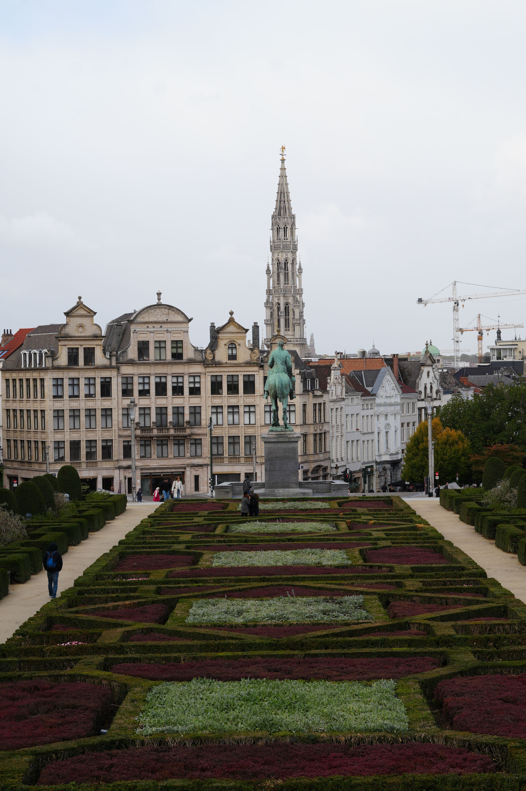
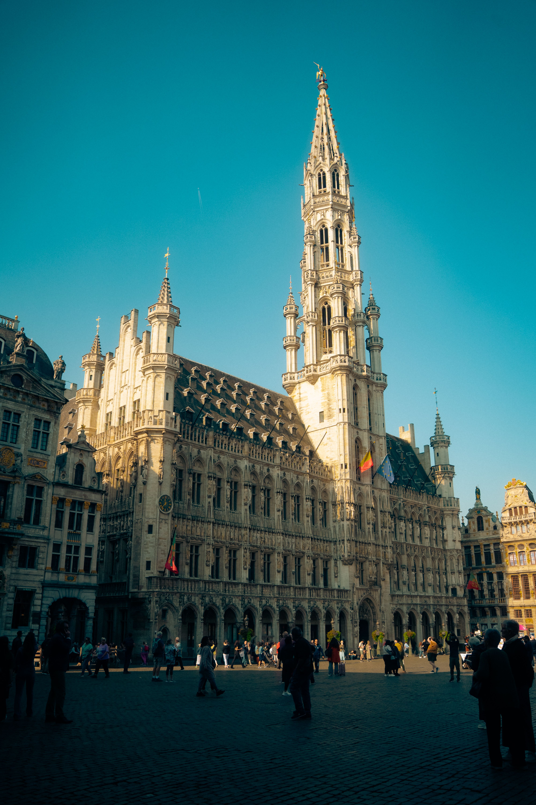
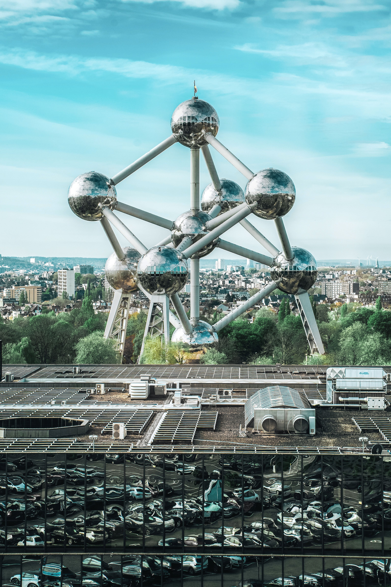

Brussels —
the city that gets completely under your skin
Nicola lived and studied in Brussels from 2005 to 2006 and fell completely in love with the city. Grand Place is one of Europe's most breathtaking squares. The Atomium is like nothing else. The beer culture is world-class. The food is exceptional. The people are warm. Brussels rewards time.
A year that changed everything
From study abroad to calling Brussels home.
Arriving in Brussels in 2005 to study, Nicola expected to be there for a year. What she found was a city that grew more interesting the longer she spent in it. Not because Brussels is traditionally beautiful in a postcard sense — it isn't, particularly. But because Brussels has a lived-in depth that reveals itself slowly.
The first time you cross Grand Place it stops you in your tracks. UNESCO World Heritage Site surrounded by ornate Gothic and Baroque guild houses, the magnificent Town Hall, the perfect proportions that somehow make everything else in Europe feel a little less grand. But Grand Place is not just a square — it's a gathering place. Sit at one of the cafés ringing it and you understand why Brussels matters. People come here. They stay. They linger over coffee and beer.
The Atomium is different — a 102-metre-tall model of an iron crystal, built for the 1958 World Expo, quirky and futuristic and completely unlike anything else in Europe. It shouldn't work. Somehow it defines Brussels.

The neighbourhoods
Brussels is not one thing. There's the Grand Place area and the EU quarter. There's the Sablon with galleries and antique shops. There's St-Gilles with its Art Nouveau treasures and lived-in charm. There are neighbourhoods filled with character that invite exploration. Living in Brussels means discovering these layers — understanding where locals actually live, where they drink, where they eat.
The beer culture
Belgium's brewing tradition runs deep, and Brussels is where it lives. The saying goes there are 365 beers brewed in Brussels, one for every day of the year. This is not exaggeration. Abbey beers brewed by monks using centuries-old recipes. Trappist ales from monastic communities. Lambics with wild yeasts and fruit. Strong dark beers. Crisp pilsners. Every evening had something different to discover. Belgian beer culture is recognised by UNESCO as an Intangible Cultural Heritage of Humanity. Sitting in a Brussels café with a proper beer at the end of the day is one of life's genuine pleasures.
The food
Brussels waffles — fluffy, golden, often served with chocolate or fruit. Belgian chocolate that deserves its reputation. Frites with proper Belgian mayonnaise. Moules-frites — mussels and fries — a Belgian institution. Stoemp. Carbonnade flamande. Eating in Brussels is an event, a ritual, part of understanding the culture. Every meal matters. Every café has pride in what it serves.

The café culture
This is where Brussels comes alive. Not rushing through a meal. Settling in. Having a coffee. Sitting with a beer for hours. Watching the city pass by. Connecting with people. This is not tourism — it's how you live in Brussels. The café is where everything happens.
By the end of that year, Brussels was not somewhere Nicola had visited — it was somewhere she had lived. She knew the neighbourhoods. She had favourite cafés. She understood the culture. She could navigate the city in French. And she didn't want to leave.
The essential Brussels experiences
UNESCO World Heritage Site. One of the most spectacular squares in all of Europe. Go at dawn, at noon, at sunset, at night illuminated. Never the same twice.
102 metres of retro-futuristic wonder. Built for the 1958 World Expo. Quirky, unforgettable, completely Brussels.
Brussels' most famous statue. A small boy statue that's surprisingly charming. Often dressed in costume. Much smaller than people expect.
Historic neighbourhood with galleries, antique shops, churches. Beautiful and worth exploring. Saturday market is excellent.
St-Gilles and other neighbourhoods are filled with spectacular Art Nouveau buildings. The architecture is extraordinary.
Magritte Museum, Belgian Comic Strip Center, Royal Museums of Fine Arts. Brussels has serious cultural depth.
Virtually explore Brussels first
Want to see what Brussels really looks like before you book? Drive From Home lets you virtually explore the streets, squares and architecture from your own home.
🚗 Drive Through Brussels NowBrussels as a base for exploring Belgium
Brussels is brilliantly placed for exploring the rest of Belgium. The rail network is excellent and Brussels is connected to everywhere. Using Brussels as your base, you can day trip across the country or use it as your starting point for a multi-city adventure.


Day trips from Brussels
Bruges: 1 hour by train. One of the most perfect medieval cities in the world. Canals, chocolate, cobbled streets.
Ghent: 35 minutes by train. Vibrant, artistic, with canals and brilliant restaurants. Worth spending at least a full day.
Antwerp: 45 minutes by train. Cathedral, diamonds, Flemish art, port-city character.
Liège: 1 hour by train. French-speaking Walloon character. Different atmosphere from Brussels and Flanders. Lively and welcoming.
Spa: Long day trip (2+ hours). Spa-Francorchamps for F1, thermal springs, Ardennes setting. Better as an overnight trip.
Why Brussels' food culture matters
Eating in Brussels is not just sustenance — it's culture. It's where you understand what it means to be Belgian.
Belgian Beer
Hundreds of distinct styles. Abbey beers from monastic brewing communities. Trappist ales. Lambics. Dubbels and tripels. Strong dark beers and crisp pilsners. The tradition runs centuries deep. UNESCO recognises Belgian beer as an Intangible Cultural Heritage. Spending an evening in a Brussels café discovering different beers is a genuine highlight.
Waffles & Chocolate
Brussels waffles are fluffy, crispy, often served with chocolate or fruit. Belgian chocolate deserves every accolade it receives. The craftsmanship is serious. The quality is exceptional. Fresh from a street stand, Belgian waffles are incomparable.
Traditional Dishes
Moules-frites (mussels and fries). Carbonnade flamande (Flemish beef stew with beer). Stoemp (creamy mashed potatoes with vegetables). Waterzooi (rich vegetable or chicken stew). These are comfort foods perfected over centuries.
Café Culture
The Brussels café is not just where you eat — it's where you live. Sit for hours with a coffee or beer. Watch the city. Connect with locals. This is how Brussels reveals itself.
Plan your Brussels trip
Want expert guidance through Brussels and Belgium? TourRadar has brilliant multi-city tours.
Disclosure: This is an affiliate link. If you book through it we may earn a small commission at no extra cost to you.
Book your experiences on Klook
Skip-the-line tickets, city passes and activities — often cheaper than booking at the door.
Disclosure: If you book through this link we may earn a small commission at no extra cost to you.
Book Brussels experiences with GetYourGuide
Grand Place tours, beer tastings, Atomium tickets, food experiences and more:
Disclosure: If you book through these links we may earn a small commission at no extra cost to you.
Common questions